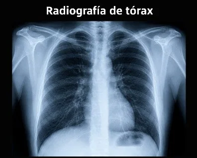

Radiografía de tórax
Estudio de diagnóstico por imágenes que utiliza una pequeña cantidad de radiación ionizante (rayos X) para obtener imágenes bidimensionales del corazón, los pulmones, las vías respiratorias, los vasos sanguíneos, la tráquea, la pleura, la pared torácica y los huesos del tórax. Es uno de los exámenes de imagen más solicitados por ser rápido, no invasivo, de bajo costo y de gran utilidad para diagnosticar y controlar diversas enfermedades respiratorias y cardiovasculares, así como lesiones traumáticas del tórax. Existen dos proyecciones principales: posteroanterior (PA) y lateral.
Se emplea para detectar múltiples patologías como neumonía, tuberculosis, derrame pleural, neumotórax, insuficiencia cardíaca, EPOC, enfisema, cáncer de pulmón, masas pulmonares y fracturas costales.
Función / ¿para qué sirve?
Interpretación / hallazgos
Intervenciones de enfermería
Antes
Verificar identidad, orden médica y posibilidad de embarazo (contraindicación relativa por radiación). Explicar el examen para reducir la ansiedad, solicitar el retiro de objetos metálicos (joyas, sostenes con aro, piercings, prótesis removibles), proporcionar bata y colocar al paciente en la posición indicada.
Durante
Colocar correctamente al paciente y asegurar que permanezca inmóvil. Indicarle que siga las instrucciones del tecnólogo: realizar una inspiración profunda y mantener la apnea unos segundos durante la toma. Brindar apoyo emocional y vigilar la seguridad del procedimiento.
Después
El paciente puede reanudar de inmediato sus actividades; no requiere cuidados especiales. Ayudarlo con sus pertenencias y si presenta mareo o debilidad, registrar el procedimiento en la historia clínica e informar que el médico interpretará los resultados y el informe radiológico.